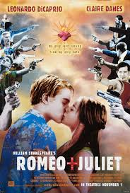
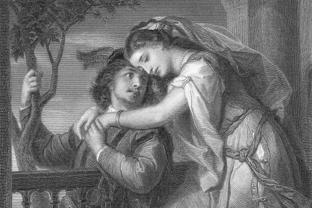

Welcome to my personal space where I share my love for films and more!
hello every body my name is samuel and fathers name is tekeste i am 23 years old ,and 3rd year software engineering student, born in a beautiful bahrdar city in 1994 ethiopian calander,but currently live in the historical city of axum .
and i like this romantic film

The film history of Romeo and Juliet, based on William Shakespeare's famous play, spans decades of adaptations, ranging from traditional takes to modern reimaginings, with various styles, settings, and interpretations. The core story of Romeo and Juliet—the doomed love between two young lovers from feuding families—has captured the imagination of filmmakers, producing a wide range of cinematic versions that reflect both the universality and the timeless nature of Shakespeare’s work.
The First Film Adaptations (Silent Era):
The first cinematic attempts to adapt Romeo and Juliet date back to the early 20th century when filmmakers experimented with adapting the works of Shakespeare to the screen. The silent film era, which was the foundation of cinema, saw a handful of adaptations of Shakespeare’s plays, with Romeo and Juliet being one of the most frequently adapted works.
Romeo and Juliet (1900) - Directed by Georges Méliès:
The first known film adaptation of Romeo and Juliet is a short film directed by Georges Méliès, a French filmmaker known for his innovative special effects and early use of cinematic storytelling. The 1900 adaptation is a brief, experimental interpretation of the play, with no sound or elaborate staging. It is more of an artistic rendition of the core concepts of the play, rather than a faithful retelling.
Romeo and Juliet (1916) - Directed by J. Stuart Blackton:
This early silent version was produced by Vitagraph Studios and is notable for its more detailed and somewhat more faithful adaptation of Shakespeare’s play. It starred Marion Fairbanks as Juliet and Lloyd Hughes as Romeo. The film is famous for being one of the earliest film productions to use elaborate costumes, sets, and staging to represent the setting of Verona.
The Golden Age of Cinema:
During the Golden Age of Hollywood in the 1930s and 1940s, more lavish and formal adaptations of Shakespeare’s plays began to emerge, thanks in part to the rise of major film studios and the increasing popularity of adapting literary works for the screen.
Romeo and Juliet (1936) - Directed by George Cukor:
This version of Romeo and Juliet is widely regarded as one of the most notable early sound adaptations of the play. Directed by George Cukor, one of Hollywood's leading directors, the film starred Leslie Howard as Romeo and Norma Shearer as Juliet.
The 1936 film is a classic example of the film industry’s adaptation of Shakespeare’s plays during the studio system’s golden age. It is a faithful adaptation, though somewhat constrained by the era's theatrical conventions and limited by the capabilities of early sound cinema. However, it still highlights the emotional depth of the play, capturing the intense love story between the two young lovers.
Romeo and Juliet (1954) - Directed by Renato Castellani:
Theater and TV Adaptations:
Several television adaptations have been made, including the BBC’s Shakespeare Re-Told (2005), which re-imagined the play in a modern setting with a more contemporary tone, set in a current-day city.
The Royal Shakespeare Company has often staged productions of Romeo and Juliet with fresh, innovative interpretations, incorporating contemporary music, dance, and choreography.
Musical Adaptations:
The West Side Story (1957), a Broadway musical by Leonard Bernstein and Stephen Sondheim, is a retelling of Romeo and Juliet set in 1950s New York City, with two rival gangs (the Jets and the Sharks) standing in for the Montagues and Capulets. The musical was later adapted into a highly successful 1961 film and continues to be a popular adaptation of Shakespeare’s classic love story.
A new West Side Story film directed by Steven Spielberg was released in 2021, further showcasing the lasting influence of Romeo and Juliet on modern culture.
Romeo and Juliet's Enduring Legacy:
The history of Romeo and Juliet as a film continues to evolve as it inspires new generations of filmmakers. From early silent films to modern re-imaginings, the tale of star-crossed lovers remains a universally recognized symbol of tragic love, familial conflict, and fate. The play’s ability to transcend time periods, locations, and cultural settings has ensured its continued presence in both literature and cinema. Each new adaptation brings something fresh while remaining rooted in the original themes and beauty of Shakespeare’s work.
es from products that are purchased through our site as part of our Affiliate Partnerships with retailers. The material on this site may not be reproduced, distributed, transmitted, cached or otherwise used, except with the prior written permission of Condé Nast.
This Italian version of Romeo and Juliet, directed by Renato Castellani, is often considered one of the most faithful and emotionally resonant adaptations of Shakespeare’s work. The film starred Laurence Harvey as Romeo and Susan Shentall as Juliet.
Set in a historical context and filmed in Italy, this version features a strong emphasis on the Italian Renaissance setting, which is more authentically depicted than in previous versions. It is also marked by the performances of the lead actors, who brought a deep sense of youthful passion to their characters.
The Rise of Modern Film Adaptations:
In the 1960s and beyond, filmmakers began experimenting more with the aesthetics and structure of Shakespeare adaptations, bringing new perspectives to Romeo and Juliet by using contemporary settings, modern languages, and innovative approaches. This era also saw several adaptations of the play for television and large-scale productions.
Romeo and Juliet (1968) - Directed by Franco Zeffirelli:
One of the most iconic film adaptations of Romeo and Juliet, this 1968 version, directed by Franco Zeffirelli, is perhaps the most well-known and beloved in cinematic history. Starring Leonard Whiting as Romeo and Olivia Hussey as Juliet, Zeffirelli’s adaptation remains one of the most beloved film versions of the play.
What makes this version stand out is its faithfulness to Shakespeare’s text while embracing the visual possibilities of film. The actors were relatively unknown at the time, which allowed the audience to focus on the purity of their performances. The film was shot on location in Italy, and its beautiful, naturalistic setting provided a sense of realism and beauty.
Zeffirelli’s direction is also notable for the film’s focus on youthful passion, giving Romeo and Juliet a more innocent, relatable quality. The film was widely praised for its cinematography, set design, and its emotionally moving performances, particularly that of Olivia Hussey as Juliet, who became synonymous with the role for many viewers.
The film was a massive commercial success and won several Academy Award nominations, including Best Picture.
The 1990s: Modern Retellings and Artistic Reimaginings:
The 1990s saw a wave of highly creative adaptations of Shakespeare's plays, particularly Romeo and Juliet. This period marked the intersection of classical literature with modern sensibilities, and directors began re-imagining the play in contemporary settings while still keeping its central themes intact.

Romeo + Juliet (1996) - Directed by Baz Luhrmann:
Perhaps the most famous modern adaptation of Romeo and Juliet, Baz Luhrmann's Romeo + Juliet (1996) is an innovative and bold retelling of the classic story, set in a contemporary, fictional city named Verona Beach. The film starred Leonardo DiCaprio as Romeo and Claire Danes as Juliet, bringing the tragic love story into the world of modern-day gang warfare and corporate power.
Luhrmann’s film, often referred to as a “modern Shakespeare”, combines vibrant, stylized visuals with Shakespeare’s original dialogue. The setting is updated, with the Montagues and Capulets reimagined as rival gangs, and the familiar elements of the play are adapted to a fast-paced, action-filled environment, with gunfire replacing swords, and cars replacing horses.
The film's dramatic style and hyper-stylized visuals, combined with a memorable soundtrack featuring contemporary music (including songs by Radiohead, Garbage, and The Cardigans), made it a cultural phenomenon. Leonardo DiCaprio and Claire Danes were praised for their performances, and the film became a significant success both commercially and critically.
Luhrmann’s Romeo + Juliet proved that Shakespeare’s work could still resonate with younger generations in a modern context, while also honoring the emotional depth of the original text.
Subsequent Adaptations and Influence:
Since Baz Luhrmann’s 1996 film, Romeo and Juliet has continued to inspire filmmakers around the world. The film has had a lasting influence on the genre, and its visual style and innovative approach continue to be referenced in both film and popular culture.
.jpg) Several television adaptations have been made, including the BBC’s Shakespeare Re-Told (2005), which re-imagined the play in a modern setting with a more contemporary tone, set in a current-day city.
The Royal Shakespeare Company has often staged productions of Romeo and Juliet with fresh, innovative interpretations, incorporating contemporary music, dance, and choreography.
Musical Adaptations:
The West Side Story (1957), a Broadway musical by Leonard Bernstein and Stephen Sondheim, is a retelling of Romeo and Juliet set in 1950s New York City, with two rival gangs (the Jets and the Sharks) standing in for the Montagues and Capulets. The musical was later adapted into a highly successful 1961 film and continues to be a popular adaptation of Shakespeare’s classic love story.
A new West Side Story film directed by Steven Spielberg was released in 2021, further showcasing the lasting influence of Romeo and Juliet on modern culture.
Romeo and Juliet's Enduring Legacy:
The history of Romeo and Juliet as a film continues to evolve as it inspires new generations of filmmakers. From early silent films to modern re-imaginings, the tale of star-crossed lovers remains a universally recognized symbol of tragic love, familial conflict, and fate. The play’s ability to transcend time periods, locations, and cultural settings has ensured its continued presence in both literature and cinema. Each new adaptation brings something fresh while remaining rooted in the original themes and beauty of Shakespeare’s work.
Several television adaptations have been made, including the BBC’s Shakespeare Re-Told (2005), which re-imagined the play in a modern setting with a more contemporary tone, set in a current-day city.
The Royal Shakespeare Company has often staged productions of Romeo and Juliet with fresh, innovative interpretations, incorporating contemporary music, dance, and choreography.
Musical Adaptations:
The West Side Story (1957), a Broadway musical by Leonard Bernstein and Stephen Sondheim, is a retelling of Romeo and Juliet set in 1950s New York City, with two rival gangs (the Jets and the Sharks) standing in for the Montagues and Capulets. The musical was later adapted into a highly successful 1961 film and continues to be a popular adaptation of Shakespeare’s classic love story.
A new West Side Story film directed by Steven Spielberg was released in 2021, further showcasing the lasting influence of Romeo and Juliet on modern culture.
Romeo and Juliet's Enduring Legacy:
The history of Romeo and Juliet as a film continues to evolve as it inspires new generations of filmmakers. From early silent films to modern re-imaginings, the tale of star-crossed lovers remains a universally recognized symbol of tragic love, familial conflict, and fate. The play’s ability to transcend time periods, locations, and cultural settings has ensured its continued presence in both literature and cinema. Each new adaptation brings something fresh while remaining rooted in the original themes and beauty of Shakespeare’s work.
.jpg) es from products that are purchased through our site as part of our Affiliate Partnerships with retailers. The material on this site may not be reproduced, distributed, transmitted, cached or otherwise used, except with the prior written permission of Condé Nast.
es from products that are purchased through our site as part of our Affiliate Partnerships with retailers. The material on this site may not be reproduced, distributed, transmitted, cached or otherwise used, except with the prior written permission of Condé Nast.